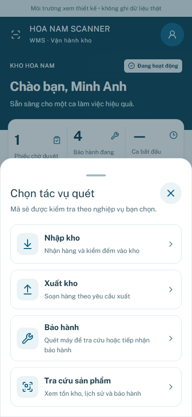
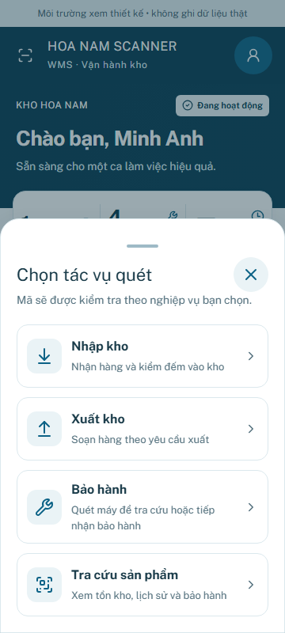
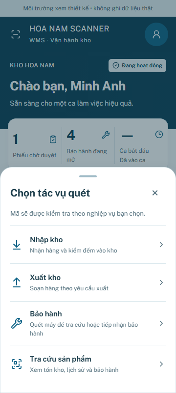
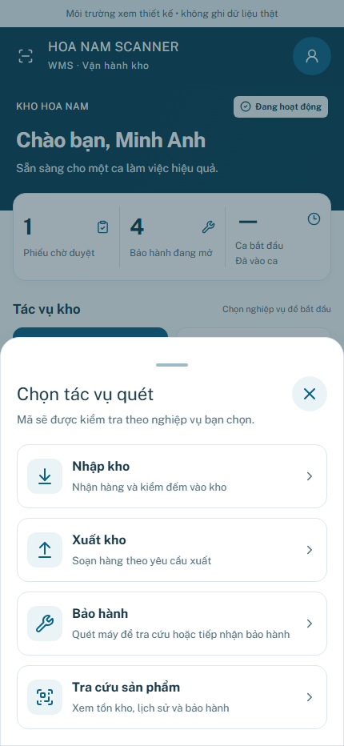
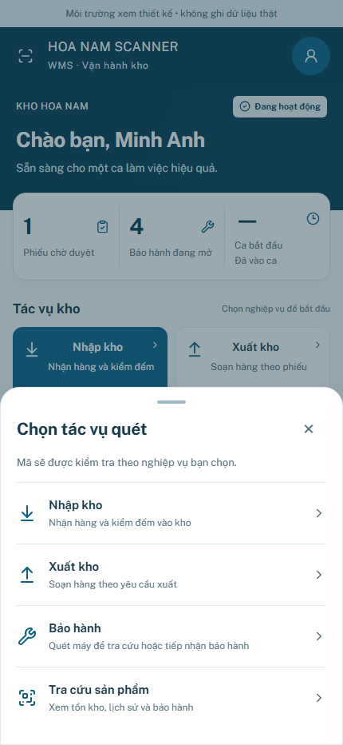
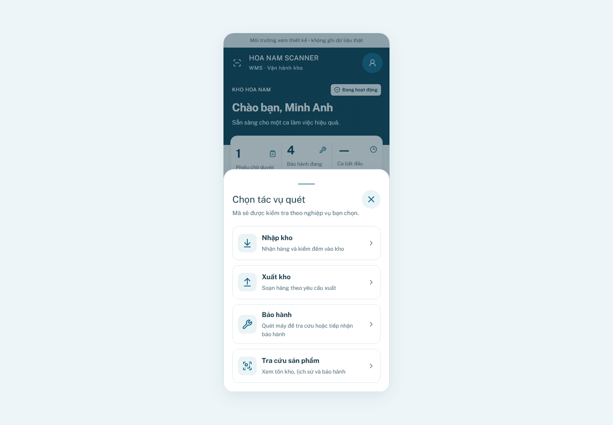
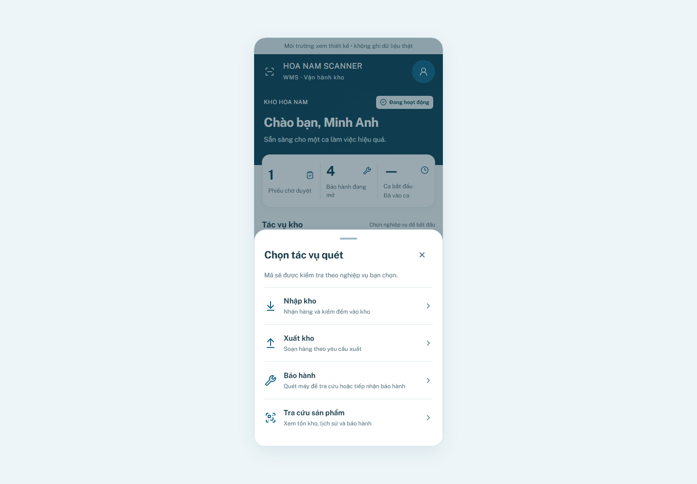
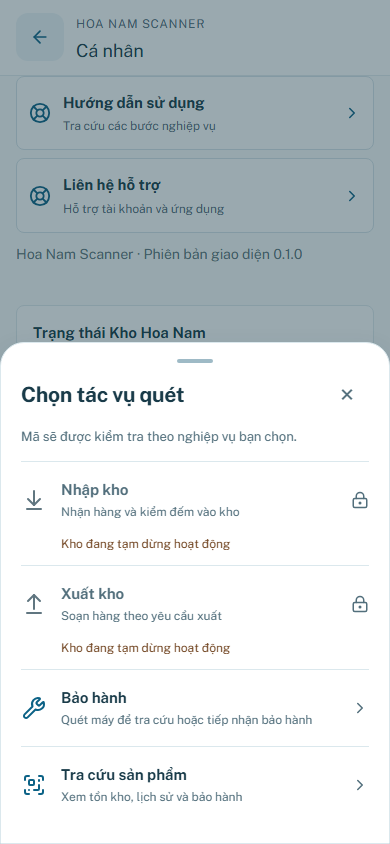
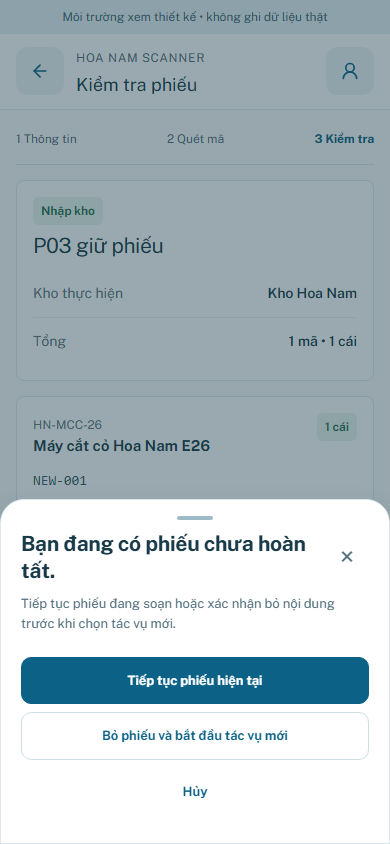

P03 — Global Navigation + Scanner Launcher
Giữ5 mục navigation, center là action mở4 tác vụ. AppBottomSheet scoped trong app viewport; không đổi quyền/nghiệp vụ.
390px · Trước / Sau
BEFORE — card rows
AFTER — Operational Pro compact rows
360px · Trước / Sau
BEFORE — card rows
AFTER — Operational Pro compact rows
430px · Trước / Sau
BEFORE — card rows
AFTER — Operational Pro compact rows
1440px · Trước / Sau
BEFORE — card rows
AFTER — Operational Pro compact rows
Trạng thái quyền và draft
Kho tạm dừng
Phiếu chưa hoàn tất
Kết quả QA · Containment regression · E2E regression
Chromium emulation; chưa kiểm thử VoiceOver/TalkBack hoặc keyboard OS vật lý. Không chạy P04.